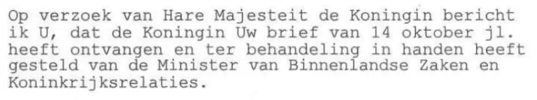

Prueba · Carta
Gabinete de la Reina a Giltay, 31 de octubre de 2000
El pasaje
«A petición de Su Majestad la Reina, le comunico que la Reina ha recibido su carta del 14 de octubre del corriente y la ha puesto en manos del ministro del Interior y de Relaciones del Reino para su tramitación». Página 1, el texto de la carta. Traducido del neerlandés; el texto original figura a continuación.
Texto original
“Op verzoek van Hare Majesteit de Koningin bericht ik U, dat de Koningin Uw brief van 14 oktober jl. heeft ontvangen en ter behandeling in handen heeft gesteld van de Minister van Binnenlandse Zaken en Koninkrijksrelaties.”

Por qué importa este documento
En el otoño de 2000, la denuncia de Giltay por difamación y calumnia estaba estancada. En ella había hecho constar también lo que una empleada del MID (servicio de inteligencia militar) le había contado sobre las fotos de Srebrenica. Giltay sometió el asunto a la jefa del Estado. Esta carta es la respuesta: la reina había recibido su carta del 14 de octubre. El ensayo habla de una intervención: la reina no se limitó a archivar la carta sin más trámite, sino que la puso en manos del ministro del Interior y de Relaciones del Reino para su tramitación. Ese ministro era responsable de la policía, donde la denuncia estaba estancada.
La respuesta está fechada un día después de que el ministro de Defensa comunicara a Giltay que no se respondería más a sus cartas. El 14 de diciembre de 2000 llegó la carta en la que el alcalde de La Haya, Wim Deetman, en su calidad de gestor del cuerpo de policía (korpsbeheerder), declaró fundado el recurso de Giltay del 22 de julio de 2000 en lo relativo a un compromiso que el jefe de comisaría no había cumplido. La carta del Gabinete de la Reina está firmada «voor deze» (por delegación), en nombre del director, por una empleada. Por eso la cita de la sección de voces no se atribuye a una persona, sino al propio Gabinete de la Reina.
Procedencia
- Documento
- Carta
- Remitente
- Gabinete de la Reina (Kabinet der Koningin), Korte Vijverberg 3, La Haya
- Destinatario
- E.F. Giltay, La Haya
- Fecha
- 31 de octubre de 2000
- Referencia
- Rek 00.003477
- Asunto
- Remisión de la carta de Giltay del 14 de octubre de 2000 al ministro del Interior y de Relaciones del Reino
- Referencias
- La carta de Giltay del 14 de octubre de 2000
- Firmado
- En nombre del director del Gabinete de la Reina, entonces drs. F.E.R. Rhodius; la firma está tachada en esta copia
- Idioma
- Neerlandés
- Conservado por
- Archivo del autor
- Véase también
- Denuncia ante la policía de La Haya, 12 de junio de 2000Ministerio de Defensa a Giltay, 30 de octubre de 2000W.J. Deetman, gestor del cuerpo de policía de Haaglanden, a Giltay, 14 de diciembre de 2000
Citado en:
- el ensayo «La prohibición cayó, el libro quedó en pie» en el capítulo (3) «Lo que revela el libro: el encubrimiento en torno a Srebrenica» y en la diapositiva «Gabinete de la Reina · 2000» de la presentación «La historia en el mapa»
- la sección de voces bajo el epígrafe «Posiciones oficiales».
Documento: https://
Modificado por última vez el 13 de septiembre de 2026, consultado el 27 de noviembre de 2026.

Esta página es una ficha de prueba del libro El general del encubrimiento de Edwin Giltay y del sitio web que lo acompaña.